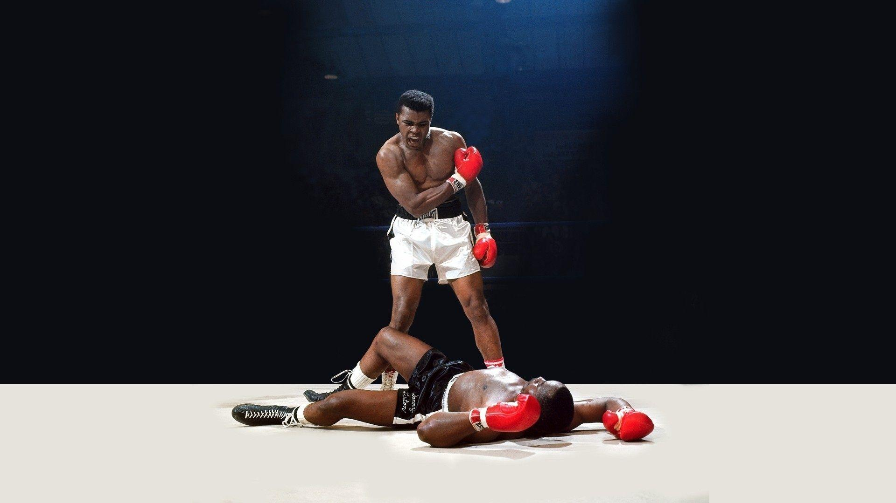

Cassius Marcellus Clay Jr.
aka Mohammed Ali

Mohammed Ali knocks down Joe Frazier in their popular match in 1977
Here's a timeline of Mohammed Ali's life
- Jan. 17, 1942: Cassius Clay is born in Louisville, Kentucky.
- Sept. 5, 1960: After winning three bouts in the qualifying round at the Rome 1960 Olympic Games, Cassius Clay defeats Zbigniew Pietrzykowski, of Poland, for the gold medal. Clay was just 18 when he won the gold medal by a decision.
- Feb. 25, 1964: At 22, Ali defeats champion Sonny Liston in a technical knockout to win the world heavyweight boxing crown in Miami.
- March 6, 1964: Cassius Clay officially changes his name to Muhammad Ali. Elijah Muhammad, a leader in the Nation of Islam, made a radio broadcast about the name change. Muhammad means “one worthy of praise.” Ali is the name of a cousin of a prophet.
- Aug. 14, 1964: Ali married Sonji Roi. The marriage later ends in divorce.
- pril 1967: Ali refuses to join the U.S. Army citing his opposition to the Vietnam War. He is subsequently barred from boxing and his title was stripped.
- Aug. 17, 1967: Ali married Belinda Boyd. After the wedding, she converted to Islam. The marriage later ends in divorce.
- Oct. 26, 1970: Ali is reinstated into boxing.
- March 8, 1971: “The Fight of the Century” takes place between Ali and Joe Frazier in New York’s Madison Square Garden. Frazier won by a unanimous decision in 15 rounds. The bout marked Ali’s first defeat of his pro career.
- April 19, 1971: The legal fight under the case name, Cassius Marsellus Clay, Jr. v. United States was argued before the U.S. Supreme Court.
- June 28, 1971: The U.S. Supreme Court reversed Ali’s 1967 conviction.
- Jan. 28, 1974: Ali and Frazier have a rematch in Madison Square Garden. This time, Ali won in 12 rounds.
- Oct. 30, 1974: The famed “Rumble in the Jungle” fight takes place in Zaire and Ali knocks out George Foreman in the eighth round. Ali famously tires out Foreman using the “rope-a-dope” strategy.
- Oct. 1, 1975: Ali took on Frazier for a third (and final) time, this time in the Philippines. Ali beat Frazier in a TKO in the 14th round in what is forever known as “The Thrilla in Manila”.
- Oct. 1, 1975: Ali’s biography, “The Greatest: My Own Story,” by Richard Durham, is published. Among the topics is in the book is the mention that Ali threw his Olympic gold medal into the Ohio River. There have been varying reports about Ali losing his medal since.
- Dec. 30, 1977: Ali’s daughter, Laila, was born. She is the daughter of Ali and his third wife, Veronica Porsche. Laila went on to become a professional boxer.
- Feb. 15, 1978: Ali loses to 1976 Olympic champion Leon Spinks in 15 rounds by a split decision.
- Sept. 15, 1978: Ali avenges his loss earlier in the year and became the first three-time world heavyweight champion by defeating Spinks in the Louisiana Superdome.
- June 27, 1979: Ali announces his retirement.
- Oct. 3, 1980: Ali comes out of retirement to face Larry Holmes in Caesars Palace in Las Vegas. Holmes overmatched Ali, and Ali’s corner stopped the fight after 10 rounds.
- 1984: Although Ali had shown some signs he might have Parkinson’s disease, a degenerative disease of the brain, leading up to the Holmes fight in 1980, he officially is diagnosed with the ailment.
- Nov. 19, 1986: Ali marries his fourth wife, Yolanda “Lonnie” Williams.
- July 19, 1996: Ali lights the Olympic cauldron during the Opening Ceremony for the Atlanta 1996 Olympic Games. He also received a replacement gold medal for the one he won in 1960.
- June 3, 2016: Ali dies at age 74 in Phoenix, after being hospitalized with respiratory issues.
"Float like a butterfly and Sting like a bee."
If you have time you can read more about this greatest boxer of our time, Mohammed Ali